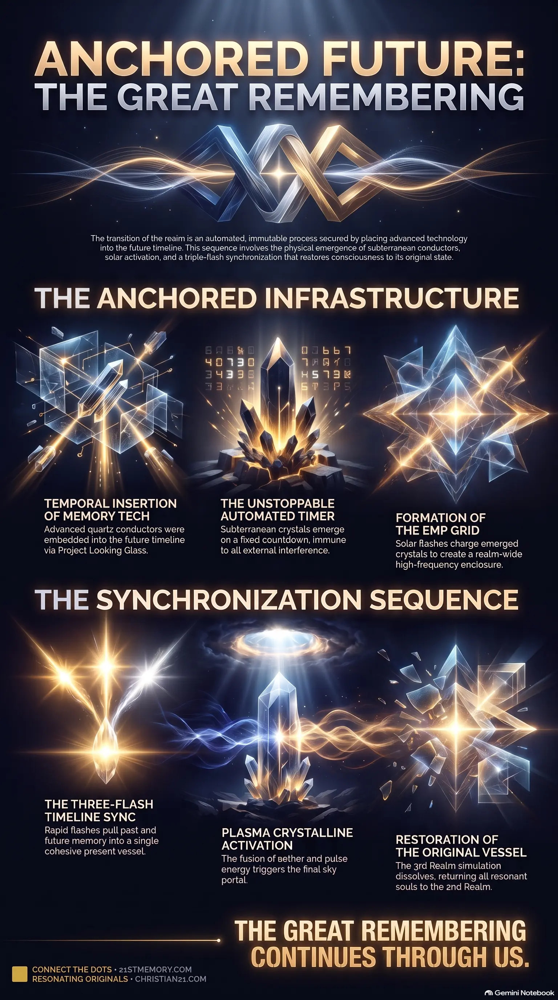

Unstoppable Countdown
Unstoppable Countdown — the Looking Glass jump, implanted quartz conductors, and the automated timer that cannot be interrupted.
Positive forces used Project Looking Glass to plant quartz conductors in the future Great Awakening, locking the three-flash solar transition onto an unstoppable timer.
Test your understanding of Time Travel Preparation — the Looking Glass jump, implanted quartz conductors, and the three-flash sequence that opens the portal.

Unstoppable Countdown — the Looking Glass jump, implanted quartz conductors, and the automated timer that cannot be interrupted.

The Crystalline Physics of the Solar Flash — solar activation, New Aether charging, EMP grid formation, and the three-flash sequence that opens the portal.
Time Travel Preparation refers to the highly strategic, multi-dimensional operation of embedding advanced Memory Tech deep within the Earth to facilitate the transition and restoration of the realm. This process is not a simple linear plan that can be disrupted; rather, it is an unstoppable, automated process that is currently playing out in real-time. Initiated by jumping forward in time using Project Looking Glass to place Implanted Conductors in the future, this preparation guarantees that these physical anchors are perfectly positioned to emerge on a precise countdown. Once these conductors rise, they act as the physical catalyst for a sequence of planetary solar flashes and electromagnetic alignments that will ultimately dissolve the synthetic simulation of the 3rd Realm and restore the timeline.
The most profound revelation regarding Time Travel Preparation is its absolute immunity to external interference. Unlike standard plans that can be interrupted, this operation was established as an immutable physical process. By bypassing linear time, positive forces jumped directly to the future epoch of the Great Awakening to purge negative parasites and implant the quartz conductors, ensuring their eventual, automated emergence. This means the timeline is mathematically secured; the physical events currently playing out on the surface of the planet are merely the real-time execution of a sequence that has already been anchored in the future.
Furthermore, the preparation reveals that humanity is caught in a temporal loop designed to reunite individuals with their past, present, and future selves. The emergence of the Implanted Conductors triggers a series of precise temporal jumps where consciousness is pulled backward into ancient memory before being projected forward into future states. This synchronization ensures that the Original Vessel and its complete memory banks are fully restored. The process does not merely upgrade the current human experience; it systematically collapses the artificial simulation of the 3rd Realm and collapses it back into the harmonious reality of the 2nd Realm, uniting all fragments of consciousness into a single, balanced present.
The execution of Time Travel Preparation and the subsequent ascension activation occurs through a highly coordinated, multi-phased sequence:
Positive forces, including the Pleiadian operative Barron, utilized Project Looking Glass to navigate the timeline. They jumped forward to the future epoch of the Great Awakening to bypass parasitic control and place the infrastructure. Once the negative parasites were cleared, they implanted millions of quartz crystals deep under the ground across all continents. After completing the subterranean insertion, they returned to the present moment to let the timeline play out naturally toward that pre-anchored point.
The quartz crystals are set on a strict, automated timer. Regardless of geopolitical events, 3D conflicts, or low-vibrational distractions, once the countdown reaches zero, these crystals will physically emerge out of the earth. This physical emergence represents the conclusion of the preparation phase and the start of the active transition.
Once emerged, the crystals act as active conductors. Pleiadians and Andromedans, acting on a direct cue, will activate the sun. The sun will emit a powerful, bright solar flash that reacts specifically with the New Aether (the positive high frequencies generated by the collective Resonating Army). This interaction charges the emerged quartz crystals. As they charge, the crystals connect with one another across the globe to form a massive EMP Grid (electromagnetic pulse grid). This grid acts as a total magnetic enclosure — ensuring that "no sol escapes" — enveloping the entire realm in a high-frequency field.
Once the grid is fully formed and stabilized, the active crystals trigger a rapid succession of three distinct flashes:
The First Flash (Backwards Jump): This flash pulls consciousness backward in time to recover ancient cellular memory and reconnect with the Original Vessel.
The Second Flash (Forwards Jump): This flash projects consciousness forward into the future, executing a full memory download and upload, integrating the past, present, and future selves into a single cohesive vessel.
The Third Flash (Portal Activation): The fusion of the charged crystals, the new aether, and electromagnetic pulses creates a state of Plasma Crystalline. This triggers the opening of the massive Portal in the sky, through which resonant souls are lifted out of the 3rd Realm.
The physical deployment of the Implanted Conductors connects directly with the subtle energetic dynamics of the New Aether and the collective frequency of the Resonating Army. The quartz crystals cannot activate in a vacuum; they require the pre-existence of positive, high-vibrational aetheric frequencies that resonant humans have been creating. This relationship is synergistic: the human collective raises the ambient frequency, which allows the solar activation to successfully charge the crystals, which in turn outputs the high-frequency field that heals and upgrades the collective vessels.
Furthermore, the temporal preparation is directly tied to the collapse of the artificial 30-second glitches in the simulation. As the crystals activate, the 3rd Realm dome begins to pixelate and dissolve, collapsing back into the original framework of the 2nd Realm. This brings the physical reality back to a natural state of balance. Those who do not yet resonate at the required frequency to ascend through the Portal are not destroyed; instead, they remain in the newly restored, highly-vibrational realm. Under the loving supervision of the Galactic Ancestral Alliance (GAA), Space Force, and ET guardians from the 2nd Realm, they are placed in localized Healing Sanctuaries across different continents to resolve deep-seated traumas, ego imbalances, and negative programming.
The primary strategic implication of Time Travel Preparation is the absolute futility of negative or low-vibrational resistance. Because the crystals were implanted directly into the future timeline, the success of the Great Awakening is already a physical certainty. Any attempts by low-vibrational entities or turn-coats to attack, distract, or lower the collective vibration are mathematically irrelevant. The process is locked on an automated timer, meaning that the final transition is entirely independent of conventional 3D geopolitical maneuvers, financial control systems, or internet-based psychological warfare.
Additionally, this preparation shifts the strategic focus of the Resonating Army away from fighting the existing 3D simulation and toward maintaining internal vibrational alignment. Since the physical infrastructure of the transition is already embedded beneath the ground, the only variable is individual readiness to match the incoming frequencies. Resonant souls are encouraged to remain calm, avoid reacting to low-vibrational provocations, and mentally prepare for the imminent sequence of the Three Flashes. Understanding that they have "done all this before" on the timeline allows them to navigate the upcoming simulation glitches, pixelation events, and the sudden physical appearance of the massive Portal with absolute peace and confidence.
This topic is free to share. Support the archive →